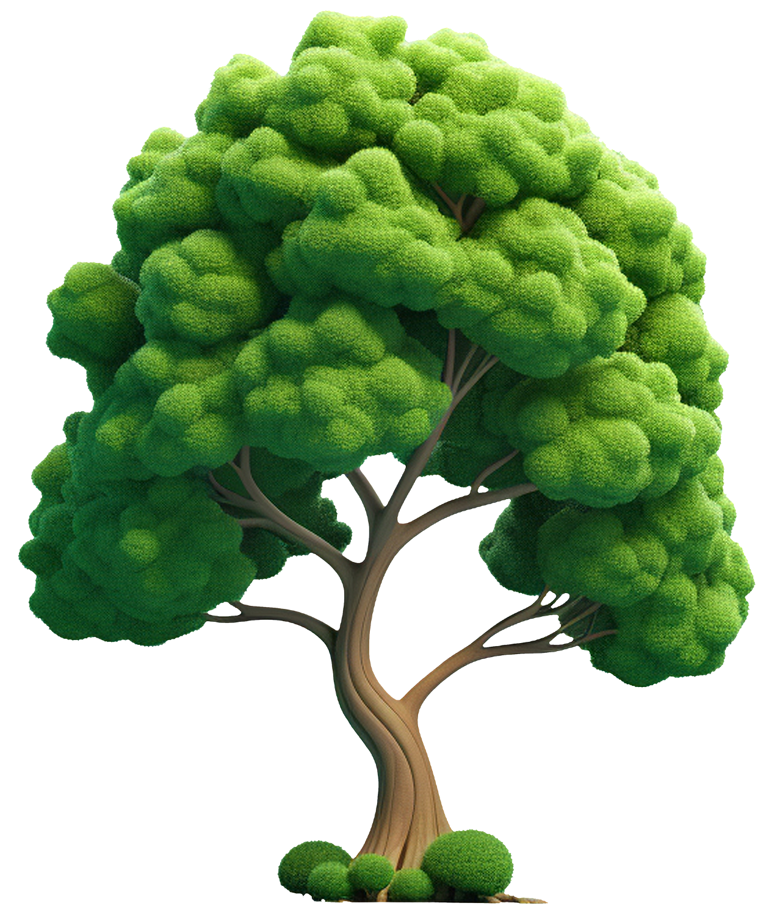

팝업
생명의숲 나무심기
0 그루
2024년, 총 102,302그루의 나무가 땅 위로 자랐습니다!
함께한 시민들의 손길로 건강한 도시 숲을 만들어가고 있습니다.

생명의숲 활동소개
함께 심고,
함께 심고,
함께 자라는 숲
시민의 손으로 나무를 심고,
함께 돌보며 도시 속에 건강한 숲을 만들어갑니다.
생명의숲 활동 이야기
숲과 사람이 만드는 소식
-
후원의 달 : 지금지구와 우리를 위한 힘모으기
2025.10.31 생명의숲2025 지금지구 숲행동 후원의 달 : 지금지구와 우리를 위한 힘모으기 2025년 11월. 시민들과 함께했던 지금지구 숲행동 캠페인을 돌아봅니다. 한 달간 진행되는 참여 활동 속에서 캠페인의 의미를 다시 새기고, 서로를 격려하며, 생명의숲 활동에 공감하고 응원해주시는 후원자 분들께 감사를 전하고자 합니다. 후원의달에 생명의숲은 시민 여러분의 참여와 연대를 통해 숲행동의 힘을 쌓아갑니다.
후원의 달 : 지금지구와 우리를 위한 힘모으기 2025년 11월. 시민들과 함께했던 지금지구 숲행동 캠페인을 돌아봅니다. 한 달간 진행되는 참여 활동 속에서 캠페인의 의미를 다시 새기고, 서로를 격려하며, 생명의숲 활동에 공감하고 응원해주시는 후원자 분들께 감사를 전하고자 합니다. 후원의달에 생명의숲은 시민 여러분의 참여와 연대를 통해 숲행동의 힘을 쌓아갑니다. -
서로배움학교 [산림써클] 4회차 - 탄소중립과 산림경영, 생명의숲 활동가 11명의 질문들
2025.10.20 윤여진사무처 이야기 서로배움학교 [산림써클] 4회차 - 탄소중립과 산림경영, 생명의숲 활동가 11명의 질문들 서로배움학교는 생명의숲 활동가의 역량 강화를 위한 스터디 그룹 프로그램입니다. ‘일 기반 학습, 일을 통한 성장’을 중심에 두고, 주최자가 선정한 주제를 바탕으로 3~5인의 공감하는 활동가들이 참여하여, 모든 구성원이 배움의 주체가 되어 경계 없이 생각을 나눕니다.
서로배움학교 [산림써클] 4회차 - 탄소중립과 산림경영, 생명의숲 활동가 11명의 질문들 서로배움학교는 생명의숲 활동가의 역량 강화를 위한 스터디 그룹 프로그램입니다. ‘일 기반 학습, 일을 통한 성장’을 중심에 두고, 주최자가 선정한 주제를 바탕으로 3~5인의 공감하는 활동가들이 참여하여, 모든 구성원이 배움의 주체가 되어 경계 없이 생각을 나눕니다. -
[종로 정원사마을] 건강한 정원문화의 씨앗: 4크4색 가드닝 크루
2025.10.15 김현정도시숲 [종로 정원사마을] 건강한 정원문화의 씨앗: 4크4색 가드닝 크루 종로는 전통미와 현대미가 조화를 이루어 특별한 정취를 가진 공간입니다. 우리 종로 정원사마을 사업은 문화유산과 아스팔트 사이를 흙내음으로 보듬기 위해 시작되었습니다. 종로 정원사마을 가드닝 크루는 꽃과 나무를 심어 생명을 불어넣고 있습니다. 북촌, 서촌, 청진인사동, 사직동 네 구역에서 공공 정원을 돌보는 동안 서로 다른 이야기를 발견한 크루들의 행보를 소개합니다.
[종로 정원사마을] 건강한 정원문화의 씨앗: 4크4색 가드닝 크루 종로는 전통미와 현대미가 조화를 이루어 특별한 정취를 가진 공간입니다. 우리 종로 정원사마을 사업은 문화유산과 아스팔트 사이를 흙내음으로 보듬기 위해 시작되었습니다. 종로 정원사마을 가드닝 크루는 꽃과 나무를 심어 생명을 불어넣고 있습니다. 북촌, 서촌, 청진인사동, 사직동 네 구역에서 공공 정원을 돌보는 동안 서로 다른 이야기를 발견한 크루들의 행보를 소개합니다. -
[지식콘텐츠] 04. 가지치기, 아무 때나 아무렇게 해도 될까?
2025.09.26 유영민2025 지금지구 숲행동 [지식콘텐츠] 04. 가지치기, 아무 때나 아무렇게 해도 될까? 도시 공원에서 가지치기를 마친 나무 아래, 한 아이가 멈춰 서서 물었습니다. “엄마, 나무가 울고 있어… 왜 저기서 물이 나와?” 절단된 가지 끝에서 수액이 흘러내리고 있었고, 작은 벌레들이 몰려들고 있었습니다. 곁에 있던 할아버지는 조심스레 말을 건넸습니다. “그건 가지치기를 여름에 해버려서 그래. 나무가 지금, 많이 아프겠구나.”
[지식콘텐츠] 04. 가지치기, 아무 때나 아무렇게 해도 될까? 도시 공원에서 가지치기를 마친 나무 아래, 한 아이가 멈춰 서서 물었습니다. “엄마, 나무가 울고 있어… 왜 저기서 물이 나와?” 절단된 가지 끝에서 수액이 흘러내리고 있었고, 작은 벌레들이 몰려들고 있었습니다. 곁에 있던 할아버지는 조심스레 말을 건넸습니다. “그건 가지치기를 여름에 해버려서 그래. 나무가 지금, 많이 아프겠구나.” -
생명의숲과 함께한 2025년 유한킴벌리 대학생 그린캠프
2025.09.03 정하나공존숲 생명의숲과 함께한 2025년 유한킴벌리 대학생 그린캠프 지난 7월 28일부터 30일까지, ‘우리강산 푸르게 푸르게’ 캠페인의 일환으로 진행된 2025 유한킴벌리 그린캠프가 경상북도 안동, 울진과 강원특별자치도 동해 일대에서 열렸습니다. 올해 그린캠프는 대형 산불피해 복원 현장활동을 통해, 숲의 소중함과 회복의 의미에 대해 느끼는 시간이었습니다. 생명의숲은 산불과 기후 위기로 사라져가는 숲 생태계를 보호하고, 현장 학습을 통해 기후 위기 대응 방안을 제시하는 활동에 기여합니다. 또한 이를 통해 대학생들이 숲의 중요성을 배우고, 숲을 위한 더 나아가 환경을 위한 실질적인 아이디어를 제안할 수 있습니다.
생명의숲과 함께한 2025년 유한킴벌리 대학생 그린캠프 지난 7월 28일부터 30일까지, ‘우리강산 푸르게 푸르게’ 캠페인의 일환으로 진행된 2025 유한킴벌리 그린캠프가 경상북도 안동, 울진과 강원특별자치도 동해 일대에서 열렸습니다. 올해 그린캠프는 대형 산불피해 복원 현장활동을 통해, 숲의 소중함과 회복의 의미에 대해 느끼는 시간이었습니다. 생명의숲은 산불과 기후 위기로 사라져가는 숲 생태계를 보호하고, 현장 학습을 통해 기후 위기 대응 방안을 제시하는 활동에 기여합니다. 또한 이를 통해 대학생들이 숲의 중요성을 배우고, 숲을 위한 더 나아가 환경을 위한 실질적인 아이디어를 제안할 수 있습니다. -
서로배움학교 [산림써클] 3회차 - 종의 소멸에서 시작된 대화, 산림써클의 질문들
2025.09.01 박태민사무처 이야기 서로배움학교 [산림써클] 3회차 - 종의 소멸에서 시작된 대화, 산림써클의 질문들 서로배움학교는 생명의숲 활동가의 역량 강화를 위한 스터디 그룹 프로그램입니다. ‘일 기반 학습, 일을 통한 성장’을 중심에 두고, 주최자가 선정한 주제를 바탕으로 3~5인의 공감하는 활동가들이 참여하여, 모든 구성원이 배움의 주체가 되어 경계 없이 생각을 나눕니다. 2025년 서로배움학교 <산림써클>은 산림정책팀 활동가들(이팝나무, 소나무, 매화나무, 녹나무)로 구성되어 있으며, 산림 복원과 숲 조성 활동을 바탕으로, 전문가와 함께 산림 정책에 대해 조금 더 전문적으로 논의하고, 생명의숲 활동 주제에 대해 다양한 의견을 나누고 학습하는 프로그램입니다.
서로배움학교 [산림써클] 3회차 - 종의 소멸에서 시작된 대화, 산림써클의 질문들 서로배움학교는 생명의숲 활동가의 역량 강화를 위한 스터디 그룹 프로그램입니다. ‘일 기반 학습, 일을 통한 성장’을 중심에 두고, 주최자가 선정한 주제를 바탕으로 3~5인의 공감하는 활동가들이 참여하여, 모든 구성원이 배움의 주체가 되어 경계 없이 생각을 나눕니다. 2025년 서로배움학교 <산림써클>은 산림정책팀 활동가들(이팝나무, 소나무, 매화나무, 녹나무)로 구성되어 있으며, 산림 복원과 숲 조성 활동을 바탕으로, 전문가와 함께 산림 정책에 대해 조금 더 전문적으로 논의하고, 생명의숲 활동 주제에 대해 다양한 의견을 나누고 학습하는 프로그램입니다.